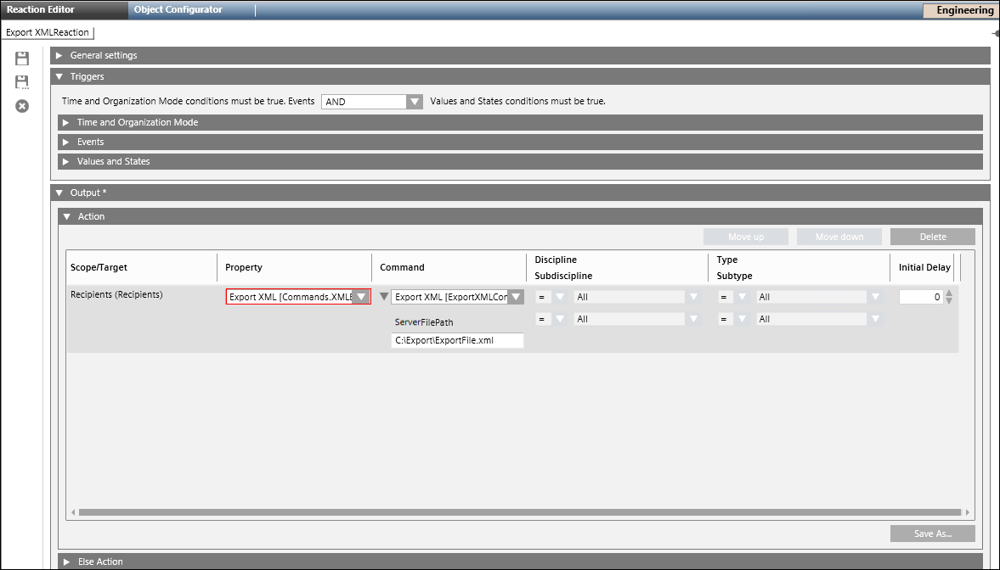
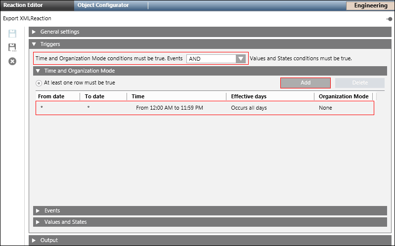
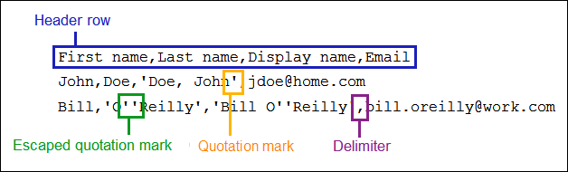
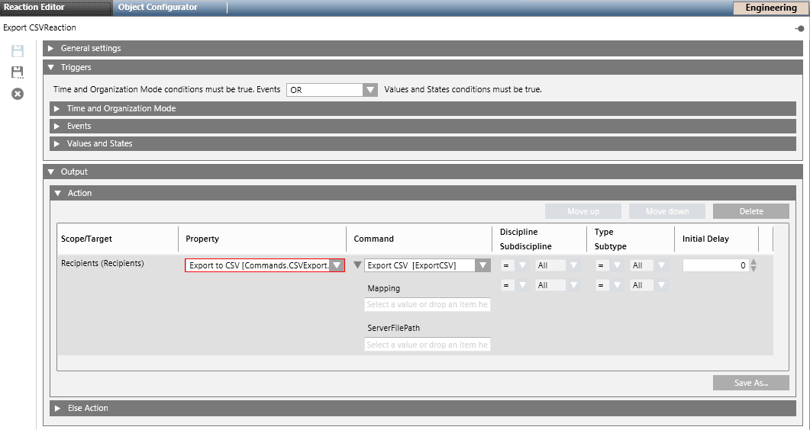
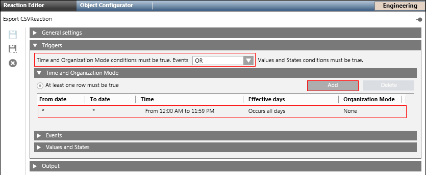

Export Recipients
This section describes additional procedures exporting recipients.
Export Recipients to XML
The Export feature is disabled for Windows App client.
- Select Application > Notification > Recipients.
- The Recipients Editor tab displays.
- Select the Export tab.
- Open the Export to XML expander.
- Select the recipients to be exported and click
 to move the selection to the Selected for export text box.
to move the selection to the Selected for export text box.
NOTE: Search recipients to narrow down the list by typing in the recipient name. - Click Export.
- The Save dialog box displays.
- Select the location where the XML file must be saved.
- Enter a file name.
- Click Save.
NOTE: XML format is meant for system to system export of recipients.
- The recipients are exported in XML format.
Export Recipients to XML using Command
- Select Applications > Notification > Recipients.
- Click the Export XML link.
- The Recipients Editor tab displays.
- Select the Extended Operation tab.
- Click the Export XML link to enable the export options.
- The File Path field and Send display.
- In the File Path field, enter the local file path of the MNS server where the XML file must be saved.
- Click Send.
- All the recipients in the Notification are exported to the XML file specified in the file path.
Export Recipients to XML using Reaction
- Select Applications > Logics > Reactions.
- The Reaction Editor tab displays.
- Drag the recipients node from Applications > Notification > Recipients onto the Action expander of the Output expander.

- Select Export XML[Commands.XMLExport.Request.Export] from the Property drop-down list.
- Select ExportXML[ExportXML] command to execute.
- In the ServerFilePath field, enter the local file path of the MNS server where the XML file must be saved.
- Open the Triggers expander. From the drop-down list, select the appropriate logical operator (AND, OR).
- Open the Time and Organization Mode expander.
- Click Add to add a new time row and enter a new time or schedule that periodically triggers the Export XML command.

- Click Save As and enter the name and description for the Export XML reaction.
- The new Export XML reaction displays in the System Browser.
Configure Mappings for CSV Export
Before configuring the CSV mapping, the user first needs to determine three properties of the CSV files:
- Header row: The first row in a CSV file may contain column names. If a header row is present, columns can be referenced by name in the CSV mapping. Otherwise, columns will need to be referenced by their index (position) in the CSV file.
- Delimiter: A certain character that delimits two values in a CSV file. Notification supports commas, semicolons, spaces and tabs as delimiter.
- Quotation mark: Surrounding individual values with quotation marks allows the use of delimiter characters within values. Notification supports single quotes and double quotes as quotation marks.
NOTE 1: CSV files exported from Excel by default have the following properties:
Header row: Yes
Delimiter: Comma
Quotation mark: Double quote.
NOTE 2: If the character used as quotation mark appears within quoted values, the character must be escaped by doubling it. This escaping process is typically performed by the process that creates a CSV file from a data source.

- Do the following to create a new export mapping:
a. Click New: The Create mapping as dialog box displays.
b. Enter a name for the mapping and click OK: The name displays under Mapping.
c. (Optional) Select the Header row check box if the exported CSV file must contain a header row.
d. Select a separator from the Delimiter drop-down list.
e. In the Columns section, map a Notification Property with a CSV Column. From the Notification Property drop-down list, select a Notification Property and enter the information in the CSV Column (Excel Column) field for the selected notification property.
f. From the Quotations drop-down list, select a quotation type.
g. Click Save. - The mapping configuration is saved.
NOTE: This configured mapping can be saved for future use. - Do the following to edit an existing mapping:
a. Select the mapping from the Mapping drop-down list.
b. Edit the required fields.
c. Click Save. - To select an existing mapping, select it from the Mapping drop-down list.
- Do the following to save an existing mapping under a new name:
a. Select the mapping from the Mapping drop-down list.
b. Click Save As.
c. The Save mapping as dialog box displays.
NOTE: By default, Copy of [Mapping Name] displays in the Save mapping as dialog box.
d. Enter a new name for the corresponding mapping.
e. Click OK. - Click Save.
Export Recipients to CSV
- Select Application > Notification > Recipients.
- The Recipients Editor tab displays.
- Select the Export tab.
- Expand Export to CSV and select the recipients to be exported and click to move the selection to the Selected for export text box.
NOTE: Search recipients to narrow down the list by typing in the recipient name. - Select a mapping configuration if present or create a mapping configuration. Refer to the Configuring Mappings for CSV Export section for more information.
- Click Export.
- The Save dialog box displays.
- Select the location where the CSV file must be saved.
- Enter a file name and click Save.
- The recipients are exported in CSV format.
Export Recipients to CSV using Command
- Select Applications > Notification > Recipients.
- The Recipients Editor tab displays.
- Select the Extended Operation tab.
- Click the Export CSV link to enable the export options.
- The Mapping, File Path field and Send button display.
- Enter the mapping to be used for the CSV export in the Mapping field.
- Select the File Path field, enter the local file path of the MNS server where the CSV file must be saved.
- Click Send.
- The recipients are exported in CSV format.
Export Recipients to CSV using Reaction
- Select Applications > Logics > Reactions.
- The Reaction Editor tab displays.
- Drag the recipients node from Applications > Notification > Recipients onto the Action expander of the Output expander.

- From the Property drop-down list, select Export to CSV [Commands.CSVExport.Request.Export].
- The ExportCSV[ExportCSV] command displays under Command column.
- Enter the mapping to be used for the CSV export in the Mapping field.
- In the ServerFilePath field, enter the local file path of the Notification server where the CSV file must be saved.

- Open the Triggers expander.
- From the drop-down list, select the appropriate logical operator (AND, OR).
- Open the Time and Organization Mode expander.
- Click Add to add a new time row and enter a new time or schedule that periodically triggers the export to CSV command.
- Click Save As and enter the name and description for the export to CSV reaction.
- The new export to CSV reaction displays in the System Browser.